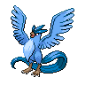

フリーザーのデータ
基本ステータス
もちもの・メダル・条件付き効果なし。割合の値は％です。待ち時間は短縮率、移動速度はゲーム内の値です。
| Lv | HP | 攻撃 | 防御 | 特攻 | 特防 | 移動速度 | 急所率 | 待ち時間 | HP吸収率 | 通常攻撃の速さ | 貫通 |
|---|---|---|---|---|---|---|---|---|---|---|---|
| 1 | 3740 | 20 | 114 | 96 | 118 | 3650 | 0 | 0 | 0 | 10 | 0 |
| 2 | 3964 | 23 | 131 | 109 | 132 | 3650 | 0 | 0 | 0 | 10.72 | 0 |
| 3 | 4210 | 27 | 150 | 123 | 147 | 3650 | 0 | 0 | 0 | 11.5 | 0 |
| 4 | 4481 | 31 | 172 | 139 | 163 | 3650 | 0 | 0 | 0 | 12.37 | 0 |
| 5 | 4778 | 36 | 195 | 156 | 181 | 3800 | 0 | 5 | 0 | 13.32 | 0 |
| 6 | 5106 | 41 | 220 | 175 | 201 | 3800 | 0 | 5 | 0 | 14.36 | 0 |
| 7 | 5466 | 46 | 248 | 196 | 223 | 3950 | 0 | 5 | 0 | 15.51 | 0 |
| 8 | 5863 | 53 | 279 | 219 | 248 | 3950 | 0 | 5 | 0 | 16.78 | 0 |
| 9 | 6298 | 59 | 313 | 245 | 274 | 4100 | 0 | 10 | 0 | 18.17 | 0 |
| 10 | 6778 | 67 | 350 | 273 | 303 | 4100 | 0 | 10 | 0 | 19.71 | 0 |
| 11 | 7306 | 75 | 391 | 303 | 336 | 4250 | 0 | 10 | 0 | 21.39 | 0 |
| 12 | 7886 | 84 | 436 | 337 | 371 | 4250 | 0 | 10 | 0 | 23.24 | 0 |
| 13 | 8525 | 93 | 485 | 374 | 410 | 4250 | 0 | 10 | 0 | 25.29 | 0 |
| 14 | 9227 | 104 | 540 | 415 | 453 | 4250 | 0 | 10 | 0 | 27.53 | 0 |
| 15 | 10000 | 116 | 600 | 460 | 500 | 4250 | 0 | 10 | 0 | 30 | 0 |

フリーザー急所・HP吸収などの仕様
急所の対象は通常攻撃です。 基本の急所率は全レベル0%です。
通常攻撃
効果・条件の説明
氷のかけらを飛ばし、命中した相手の移動速度を0.3秒間30%下げます。
わざ1
こごえるかぜ
効果・条件の説明
指定方向へ冷気を吹き付けて攻撃し、地面を一時的に凍らせます。
ふぶき
効果・条件の説明
吹雪で繰り返し攻撃し、当たった相手のこおりカウンターを増やします。
ふぶき+
効果・条件の説明
強化後の変更点：ダメージとフリーズカウンターを与える間隔が短くなり、攻撃回数が8回に増えます。
わざ2
こおりのつぶて
効果・条件の説明
氷の塊を飛ばし、相手にダメージと減速を与えます。
効果・条件
命中した相手の移動速度を2.5秒間40%下げます。
効果・条件
相手にこおりカウンターが1個以上あると、カウンターを消費してこおり状態にします。すでにこおり状態の相手には、代わりに増加したダメージを与えます。
れいとうビーム
効果・条件の説明
冷たいビームを飛ばし、相手にダメージと減速を与えます。
通常版の効果・条件
命中した相手の移動速度を2.5秒間40%下げます。
通常版の効果・条件
相手にこおりカウンターが1個以上あると、カウンターを消費してこおり状態にします。すでにこおり状態の相手には、代わりに増加したダメージを与えます。
れいとうビーム+
効果・条件の説明
強化後の変更点：こおり状態にする時間が2秒に延びます。
通常版の効果・条件
命中した相手の移動速度を2.5秒間40%下げます。
通常版の効果・条件
相手にこおりカウンターが1個以上あると、カウンターを消費してこおり状態にします。すでにこおり状態の相手には、代わりに増加したダメージを与えます。
ユナイトわざ
ユナイトわざ使用後の共通強化
移動速度30%上昇、最大HPの40%のシールド（6秒）
アイスウィングブリザード
効果・条件の説明
その場で妨害無効になり、自分を中心に5回の吹雪を起こします。
効果・条件
味方のゴールエリアに命中すると氷のかたまりを作り、相手の移動とゴールを防ぎます。氷は壊されるまで残ります。ゴールの端では、味方は引き続きHP回復とシールドを得られます。
特性
ゆきがくれ
効果・条件の説明
効果・条件
こおりカウンターは最大5個まで付き、3秒間続きます。追加で付くと残り時間を更新します。カウンター1個につき相手の移動速度が12%下がります。